Think it over
In Chapter 8 (Journey Inside the Atom) you learnt that atoms with 8 electrons in their outermost shell (an octet) are stable. Atoms that do not have an octet lose, gain or share electrons to get one. This chapter shows what happens when they do: atoms join to make molecules and compounds, and the mass never changes along the way.
Example to keep in mind
Hydrogen (a gas that burns) + oxygen (a gas that helps burning) → water (a liquid that puts out fire). The properties change completely, but the mass of water formed = mass of hydrogen + mass of oxygen that combined.
Questions from the chapter opening
Try to answer first, then tap to check.
Water can be obtained from various sources. Are all these samples of water chemically identical?
Oxygen is sometimes written as O and sometimes as O2. What is the difference?
Why does dissolved salt in water conduct electricity, but sugar does not?
Law of Conservation of Mass
Activity 9.1: Does mass change in a physical change?
- Put a dry 100 mL beaker on a digital balance and press tare (reset to zero).
- Pour about 50 mL of water and add a spatula of common salt. Note the reading.
- Swirl until the salt dissolves and note the reading again.
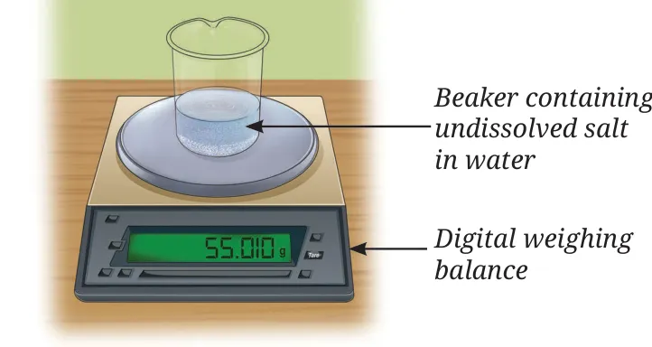
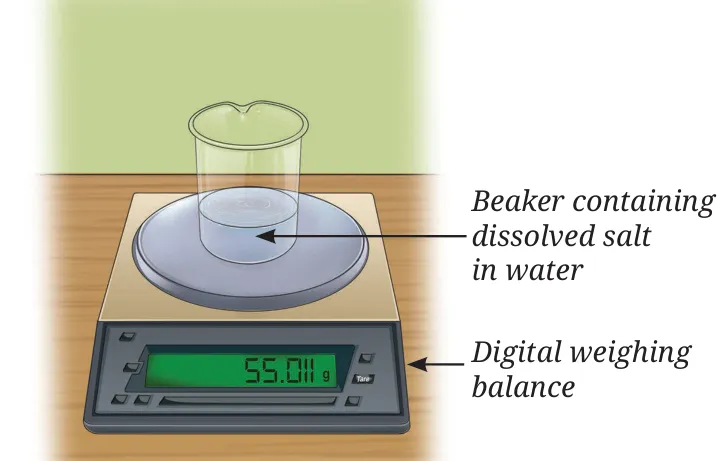
Observation
Mass of solution = mass of water + mass of salt. There is no change in mass in a physical change. (Tearing a sheet of paper into pieces also does not change its mass.)
Activity 9.2: Does mass change in a chemical change?
Vinegar reacts with baking soda (sodium hydrogencarbonate):
Set-up 1: open flask
Vinegar in a conical flask and baking soda in a balloon are weighed together (Fig. 9.2a). The baking soda is poured into the vinegar and the flask is weighed again.
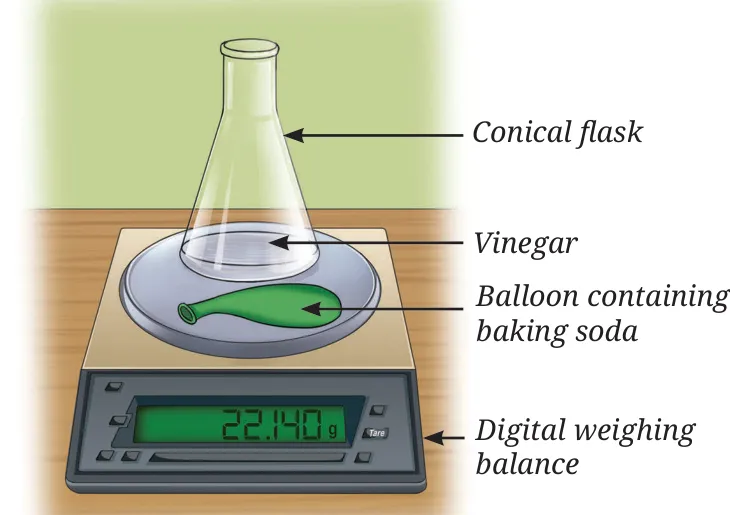
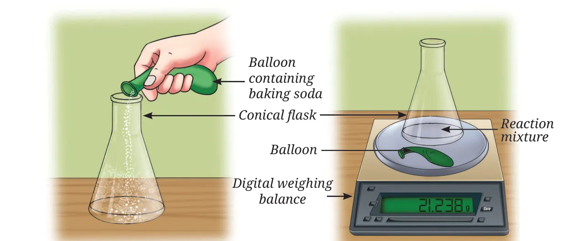
Result: the reading goes DOWN
Brisk effervescence (fizzing) happens. The carbon dioxide gas escapes into the air from the open flask, so the final reading is less than the initial reading.
Set-up 2: balloon tied on the flask (closed system)
This time the balloon with baking soda is tied to the mouth of the flask. The whole set-up is weighed, then the balloon is lifted so the baking soda falls into the vinegar.
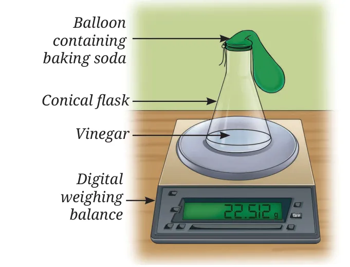
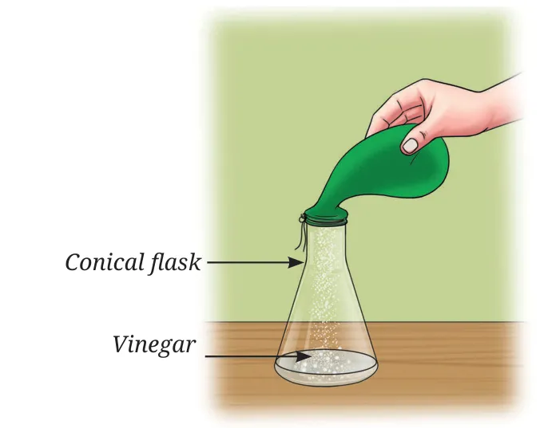
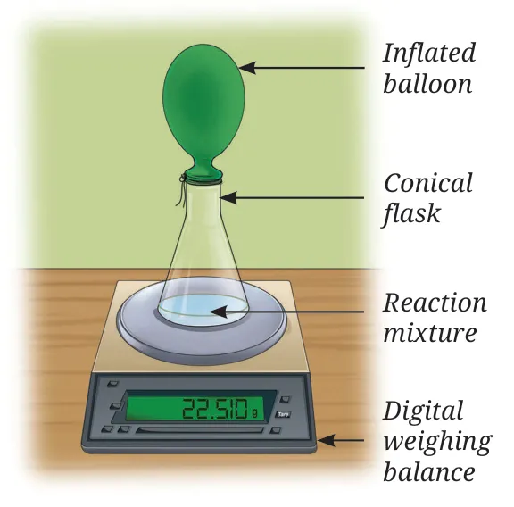
Result: the reading stays the SAME
The gas is trapped in the balloon (it inflates). So total mass of reactants = total mass of products. In set-up 1, mass seemed to be lost only because the gas escaped.
Meet a scientist: Antoine Lavoisier
Known as the Father of Modern Chemistry. He wrote that "in every operation an equal quantity of matter exists both before and after the operation".
Activity 9.3: Verify the law (group activity)
Take about 10 mL of 1% sodium sulfate solution in flask A and 10 mL of 1% barium chloride solution in flask B. Weigh both together, mix B into A, and weigh both flasks again.
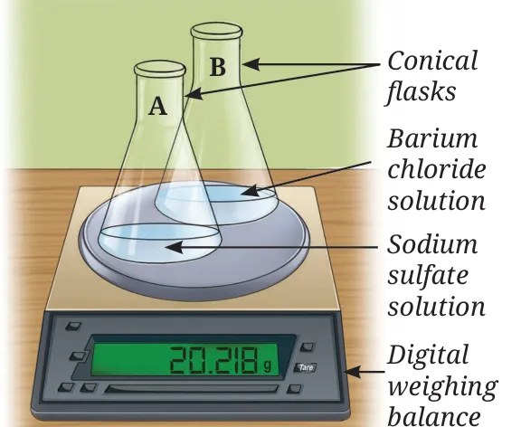
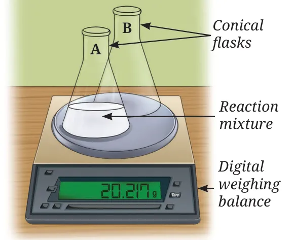
The reading does not change. No gas is formed, so this works even in an open flask.
📝 Exam tip: why keep both flasks on the balance?
A few drops always stick to the wall of the emptied flask. Keeping both flasks on the balance makes sure those drops are still counted. Also, a digital balance has an uncertainty of ±1 in its last digit, so a tiny change in the last digit is just experimental error.
🔬 Think as a scientist
Zinc + dilute hydrochloric acid → zinc chloride + hydrogen gas. To test whether mass is conserved, you must do it in a closed system (for example, tie a balloon over the flask) because hydrogen gas is formed and would escape.
Solved examples
Example 9.1
4.0 g calcium carbonate reacts with 2.92 g hydrochloric acid in a closed container, giving 1.76 g carbon dioxide, 0.72 g water and 4.44 g calcium chloride. Is the law obeyed?
Reactants: 4.0 + 2.92 = 6.92 g · Products: 1.76 + 0.72 + 4.44 = 6.92 g
Mass of reactants = mass of products, so the law is obeyed.
Example 9.2
12 g carbon + 32 g oxygen → 44 g carbon dioxide. How much CO2 forms from 2.4 g carbon?
1 g carbon gives 44/12 g CO2, so 2.4 g carbon gives (44/12) × 2.4
= 8.8 g of carbon dioxide
Law of Constant Proportions
Soon after Lavoisier, Joseph Proust showed that the elements in a compound are always present in a fixed ratio by mass, whatever the source of the compound.
Example: water
Pure water from a river, borewell or ocean always has hydrogen : oxygen = 1 : 8 by mass.
So 9 g of water always breaks down into 1 g hydrogen + 8 g oxygen.
Meet a scientist: Joseph Louis Proust
A French chemist. He showed that copper carbonate always contains copper, carbon and oxygen in the same proportion by mass, however it was prepared or wherever it was found.
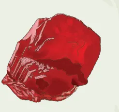
🧵 Threads of curiosity: cinnabar
The red pigment hingula (cinnabar) gives mercury 86.22% and sulfur 13.78% by mass when heated. Grinding mercury and sulfur in this same ratio forms cinnabar again: a fixed ratio, just as Proust's law says.
Example 9.3
In NaCl, sodium : chlorine = 23 : 35.5 by mass. How much chlorine reacts with 46 g of sodium?
Chlorine = (35.5 ÷ 23) × 46 = 71 g
📝 Shortcut for ratio sums
If A : B = a : b and you have m g of A, then mass of B = (b ÷ a) × m. Always check that the units are grams on both sides.
Dalton's Atomic Theory
The two laws above formed the base of John Dalton's atomic theory (1808). A postulate is a basic assumption accepted as true without formal proof, from which further ideas are built.
Postulates of Dalton's atomic theory
- All matter is made of very tiny particles called atoms, which take part in chemical reactions.
- Atoms are indivisible; they cannot be created or destroyed in a chemical reaction. (explains conservation of mass)
- Atoms of a given element are identical in mass and chemical properties.
- Atoms of different elements have different masses and chemical properties.
- Atoms combine in the ratio of small whole numbers to form compounds.
- The relative number and kinds of atoms are constant in a given compound. (explains constant proportions)
Examples
Hydrogen and oxygen atoms combine to form water; the atoms are not destroyed. When magnesium burns in air, magnesium atoms join with oxygen atoms to form white magnesium oxide powder.
Remember from Chapter 8
We now know atoms are divisible: they contain electrons, protons and neutrons. But in a chemical reaction atoms are only rearranged, never created or destroyed, so Dalton's idea still explains the two laws.
🤔 What if…
…atoms could combine in any ratio? Then water from two sources could have different compositions and different properties, and no compound would have a fixed formula.
How do atoms combine?
Definition: molecule
A molecule is an electrically neutral particle made of more than one atom, that can exist independently and shows all the properties of that substance.
- Molecule of an element: same kind of atoms, e.g. H2, Cl2, O2.
- Molecule of a compound: different kinds of atoms, e.g. HCl, H2O.
- Some elements like helium already have a stable shell and exist only as single atoms.
Atoms with fewer than 8 valence electrons (fewer than 2 if K is the only shell) become stable in two ways:
Sharing electrons → covalent bond
Atoms share some of their valence electrons.
Transferring electrons → ionic bond
One atom gives electrons, the other takes them.
When atoms combine, the total energy becomes lower than that of the separate atoms, so the arrangement is more stable. The force that holds atoms together is called a chemical bond.
9.4.1 Covalent bond: bonding by sharing electrons
A. Molecules of elements
Hydrogen (H2): H has 1 electron (K shell). It needs 1 more to fill the K shell (duplet), so two H atoms share one electron each.
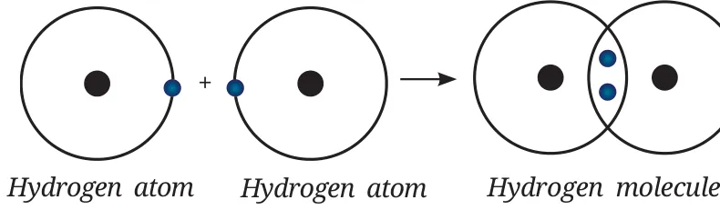
Definitions
Covalent bond: the bond formed between atoms by a shared pair of electrons. The shared pair attracts both nuclei and holds them together.
Single bond: one shared pair (each atom gives 1 electron), drawn as one line, H—H.
Chlorine (Cl2): Cl is 2, 8, 7. It needs 1 electron, so two Cl atoms share one electron each: a single bond, Cl—Cl.
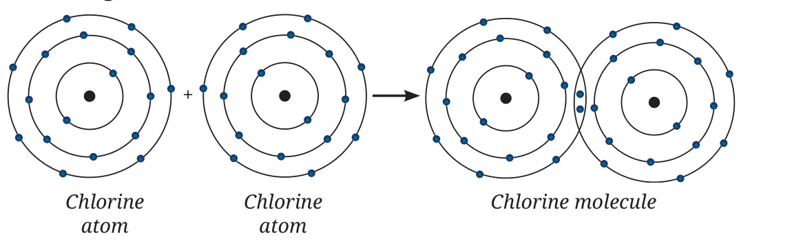
Oxygen (O2): O is 2, 6. It needs 2 electrons, so two O atoms share two electrons each: a double bond, O=O.
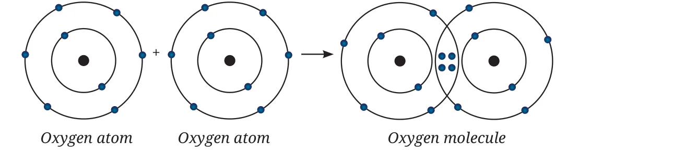
📝 Count the lines
Number of lines between two atoms = number of shared pairs. One pair: single bond (H—H). Two pairs: double bond (O=O). Three pairs: triple bond (N≡N in nitrogen).
B. Molecules of compounds
Steps: (1) write the electronic configurations; (2) count how many electrons each atom needs (octet, or duplet for H); (3) share that many electrons.
Hydrogen chloride (HCl): H (1) needs 1 and Cl (2, 8, 7) needs 1, so they share one pair: H—Cl. HCl is a covalent compound.
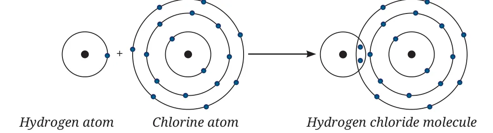
Water (H2O): O needs 2 electrons but each H can share only 1. So two H atoms each share one electron with one O atom.
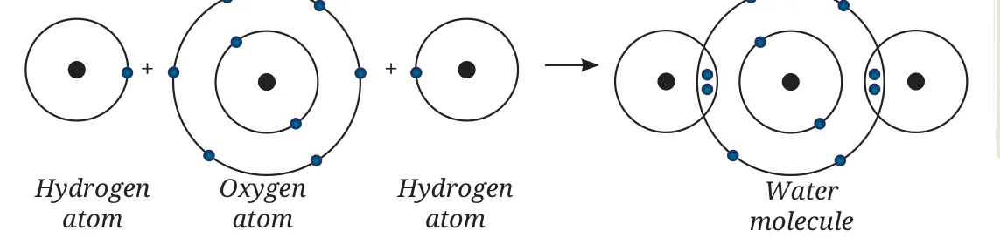
🤝 Together we are strong
Just as atoms share electrons and become stable, sharing and caring among people builds strong relationships, a stronger community and a strong nation.
⚛️ Bridging science and society
Splitting or combining atomic nuclei releases huge nuclear energy, used to generate electricity, in medicine, research and space exploration. Raja Ramanna, often called the Father of the Indian Nuclear Programme, helped build India's peaceful nuclear energy programme.
C. Naming covalent compounds
- First element keeps its name; the second ends in -ide.
- Prefixes give the number of atoms: mono 1, di 2, tri 3, tetra 4, penta 5, hexa 6.
- mono- is dropped for the first element but used for the second.
- If the prefix ends in o or a and the element starts with a vowel, drop that vowel (monoxide, pentoxide). Prefixes ending in i keep it (dioxide, trioxide).
- No prefix before hydrogen when it comes first: H2S is hydrogen sulfide.
| Formula | Name | Note |
|---|---|---|
| CO | carbon monoxide | not "monooxide" |
| CO2 | carbon dioxide | not "monocarbon dioxide" |
| CS2 | carbon disulfide | two S atoms |
| PCl3 | phosphorus trichloride | three Cl atoms |
| SF6 | sulfur hexafluoride | six F atoms |
| N2O4 | dinitrogen tetroxide | not "tetraoxide" |
| N2O5 | dinitrogen pentoxide | |
| H2O, NH3 | water, ammonia | common names are used |
Ionic bond: transfer of electrons
Rule of thumb
Atoms with fewer than 4 valence electrons usually lose them (metals: Na, Mg, Al…). Atoms with more than 4 usually gain or share electrons (non-metals: O, S, Cl…).
Sodium chloride (NaCl)
Step 1: Sodium (Z = 11) is 2, 8, 1. It loses its one valence electron. It now has 11 protons and only 10 electrons, so it carries a +1 charge: the sodium cation, Na+ (2, 8).
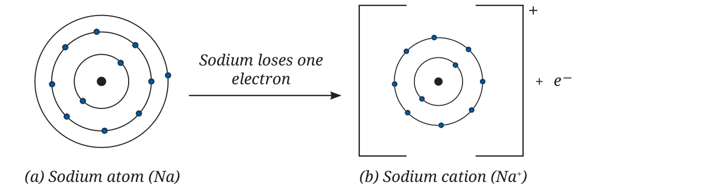
Step 2: Chlorine (Z = 17) is 2, 8, 7. It gains one electron: 17 protons, 18 electrons, charge –1. This is the chloride anion, Cl– (2, 8, 8).
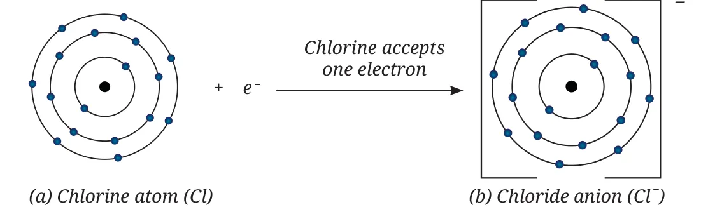
Step 3: The oppositely charged ions attract each other.
Definitions
Cation: positive ion (atom lost electrons). Anion: negative ion (atom gained electrons). Together they are called ions.
Ionic bond: the electrostatic force of attraction between oppositely charged ions that holds them together.
🧵 Threads of curiosity: crystals
Ionic compounds do not exist as single units. In a NaCl crystal each Na+ is surrounded by six Cl– ions and each Cl– by six Na+ ions, in a repeating 3-D pattern called a crystal structure. Drawn with dots for ions, it is called a crystal lattice.
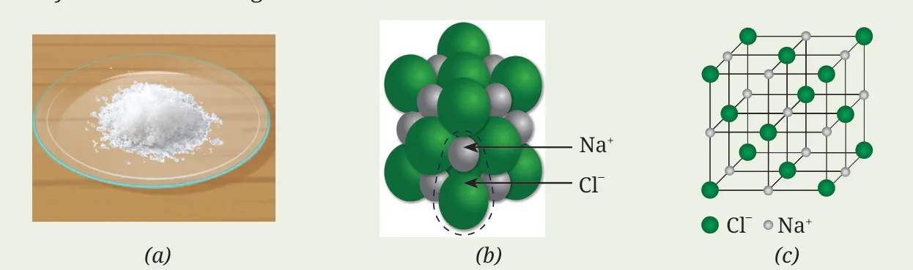
Sulfur (2, 8, 6) gains two electrons to complete its octet and becomes the sulfide ion, S2–.
A. Naming ionic compounds
- Write the cation first, then the anion: sodium chloride, calcium oxide, magnesium sulfide.
- Simple anions end in -ide (chloride, oxide, sulfide).
- Metals usually form cations; non-metals form anions.
- Polyatomic ions are made of two or more atoms (OH–, SO42–). Their names usually do not end in -ide (hydroxide is an exception).
| Table 9.1 (a) Common monoatomic ions | ||
|---|---|---|
| Ion | Formula | Valency |
| Sodium | Na+ | 1 |
| Lithium | Li+ | 1 |
| Potassium | K+ | 1 |
| Silver | Ag+ | 1 |
| Copper (cuprous) | Cu+ | 1 |
| Calcium | Ca2+ | 2 |
| Barium | Ba2+ | 2 |
| Magnesium | Mg2+ | 2 |
| Zinc | Zn2+ | 2 |
| Iron (ferrous) | Fe2+ | 2 |
| Copper (cupric) | Cu2+ | 2 |
| Iron (ferric) | Fe3+ | 3 |
| Aluminium | Al3+ | 3 |
| Fluoride | F– | 1 |
| Chloride | Cl– | 1 |
| Bromide | Br– | 1 |
| Iodide | I– | 1 |
| Oxide | O2– | 2 |
| Sulfide | S2– | 2 |
| Table 9.1 (b) Common polyatomic ions | ||
|---|---|---|
| Ion | Formula | Valency |
| Hydroxide | OH– | 1 |
| Nitrate | NO3– | 1 |
| Hydrogencarbonate | HCO3– | 1 |
| Ammonium | NH4+ | 1 |
| Carbonate | CO32– | 2 |
| Sulfate | SO42– | 2 |
📝 Memory tip
-ous = lower charge (ferrous Fe2+, cuprous Cu+). -ic = higher charge (ferric Fe3+, cupric Cu2+). Ammonium NH4+ is the only positive polyatomic ion in the table.
Writing chemical formulae
The quick way is the criss-cross method: swap the valencies (or charges) of the two parts and write them as subscripts.
9.5.1 Covalent compounds
- Write the symbols of the elements.
- Write their valencies under them.
- Cross over the valencies and write them as subscripts. A subscript of 1 is not written.
| Symbol | H | Cl |
|---|---|---|
| Valency | 1 | 1 |
| Formula | HCl | |
| Symbol | H | S |
|---|---|---|
| Valency | 1 | 2 |
| Formula | H2S | |
| Symbol | C | Cl |
|---|---|---|
| Valency | 4 | 1 |
| Formula | CCl4 | |
9.5.2 Ionic compounds
- Write the cation first, then the anion.
- Write the charges under the symbols.
- Cross over only the numbers of the charges.
- Divide the subscripts by any common factor to get the simplest ratio (2 and 4 become 1 and 2).
| Symbol | Ca | Cl |
|---|---|---|
| Charge | 2+ | 1– |
| Formula | CaCl2 | |
| Symbol | Al | O |
|---|---|---|
| Charge | 3+ | 2– |
| Formula | Al2O3 | |
| Symbol | Mg | O |
|---|---|---|
| Charge | 2+ | 2– |
| Formula | Mg2O2 → MgO | |
In CaCl2 there are two Cl– ions for each Ca2+ ion, so the charges balance (+2 –2 = 0). The charges are not written in the final formula.
With polyatomic ions
| Symbol | Ca | CO3 |
|---|---|---|
| Charge | 2+ | 2– |
| Formula | Ca2(CO3)2 → CaCO3 | |
| Symbol | Mg | OH |
|---|---|---|
| Charge | 2+ | 1– |
| Formula | Mg(OH)2 | |
| Symbol | Al | OH |
|---|---|---|
| Charge | 3+ | 1– |
| Formula | Al(OH)3 | |
| Symbol | Al | SO4 |
|---|---|---|
| Charge | 3+ | 2– |
| Formula | Al2(SO4)3 | |
Common mistake: brackets
Use brackets when there are two or more of the same polyatomic ion: Al(OH)3, not AlOH3. No brackets are needed for just one: CaCO3, NaOH.
Properties of ionic and covalent compounds
Activity 9.4
Take camphor, sodium chloride, copper sulfate, sugar and naphthalene. Test (A) whether each dissolves in water, kerosene and petrol, and (B) whether it conducts electricity as a solid and when dissolved in water, using two electrodes, a 9 V battery and a bulb.
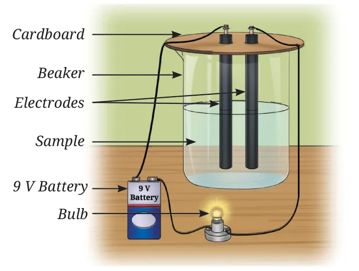
⚠️ Safety first
Do not touch the electrodes when connected; use only a low-voltage battery. Petrol and kerosene catch fire easily; keep them away from flames.
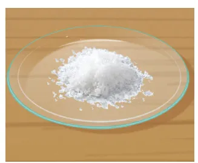
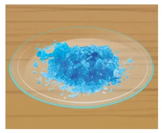
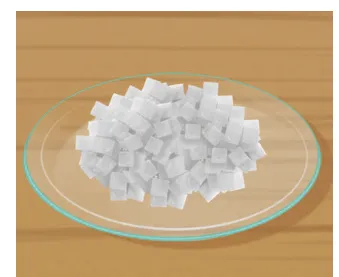
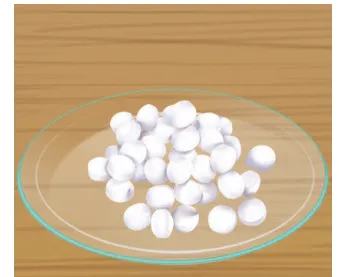
| Property | Ionic compounds | Covalent compounds |
|---|---|---|
| Formed by | Transfer of electrons | Sharing of electrons |
| Solubility | Generally soluble in water; insoluble in kerosene, petrol | Mostly insoluble in water (sugar is an exception); soluble in kerosene, petrol |
| Conduction as solid | No (ions fixed in place) | No |
| Conduction in water or molten state | Yes (ions free to move) | No (no ions) |
| Melting and boiling points | High (strong attraction between ions) | Usually low |
| Examples | NaCl, CuSO4 | Sugar, camphor, naphthalene |
📝 Why is sugar solution not a conductor?
Sugar dissolves in water, but as whole molecules, not ions. To conduct electricity you need free-moving ions.
Molecular mass and formula unit mass
| Atomic masses to remember |
|---|
| H = 1 u · C = 12 u · N = 14 u · O = 16 u · Na = 23 u · Mg = 24 u · S = 32 u · Cl = 35.5 u · K = 39 u · Ca = 40 u |
Example 9.4: H2O
(1 u × 2) + (16 u × 1)
= 18 u
Example 9.5: CO2
(12 u × 1) + (16 u × 2)
= 44 u
Example 9.6: Na2O
(23 u × 2) + (16 u × 1)
= 62 u
Example 9.7: Ca(NO3)2
40 + {14 + (16 × 3)} × 2 = 40 + 62 × 2
= 164 u
📝 Brackets first
For Ca(NO3)2, first find the mass of one NO3 (62 u), then multiply by 2. Forgetting the bracket is the most common mistake.
At a glance
- Law of Conservation of Mass (Lavoisier, 1789): mass can neither be created nor destroyed in a chemical reaction.
- Law of Definite Proportions (Proust): a compound always contains the same elements in a fixed ratio by mass (water H : O = 1 : 8).
- Dalton's Atomic Theory (1808) explained both laws: atoms are only rearranged in reactions and combine in simple whole-number ratios.
- A molecule is a neutral particle of more than one atom that can exist independently.
- Atoms combine to become stable; the force holding them is a chemical bond.
- Covalent bond: sharing of electrons (single H—H, double O=O).
- Ionic bond: transfer of electrons forming cations and anions held by electrostatic attraction.
- The formula of a covalent compound gives the actual number of atoms; the formula of an ionic compound gives the simplest whole-number ratio.
- Molecular mass: sum of atomic masses in a molecule. Formula unit mass: sum of atomic masses in a formula unit of an ionic compound.
🔭 Explore more
- Build molecules yourself: PhET Build a Molecule simulation
- Design an experiment to show that water from any source has H and O in the same ratio.
- Make a card game with cation and anion cards and match them to form compounds.
✨ The quest continues
Are there any chemical changes that do not obey the Law of Conservation of Mass?
Test yourself
Tap an option to see the right answer and the reason.
1. The Law of Conservation of Mass was proposed by…
Lavoisier, 1789. Proust gave the law of constant proportions.
2. In set-up 1 of Activity 9.2 (open flask) the final reading is less because…
The gas formed leaves the open flask; in the closed set-up the reading stays the same.
3. Hydrogen and oxygen in water are in the mass ratio…
9 g water → 1 g hydrogen + 8 g oxygen.
4. How many shared pairs of electrons are there in O2?
Each O needs 2 electrons, so they form a double bond, O=O.
5. A sodium ion Na+ has…
It loses one electron but keeps all 11 protons.
6. The correct name of N2O5 is…
"penta" ends in a and oxide starts with a vowel, so the a is dropped.
7. The formula of aluminium sulfate is…
Al3+ and SO42–: criss-cross 3 and 2.
8. A solid that conducts electricity only when dissolved in water has…
Its ions are fixed in the solid and become free in water.
9. The molecular mass of CH4 is…
12 + (1 × 4) = 16 u.
10. The formula unit mass of Mg(OH)2 is…
24 + 2 × (16 + 1) = 58 u.
Answers to all questions
Tap a question to see the answer. Use Print or save as PDF at the top to get all answers open.
Pause and Ponder
1.A student burns 10 g of ethanol in an open beaker. No residue is left. Does this mean the Law of Conservation of Mass is violated?
2.When 20 g of hydrogen reacts completely with 160 g of oxygen, how much water is formed?
3.A compound has 40% sulfur and 60% oxygen by mass. A sample has 20 g sulfur. How much oxygen is present?
4.In CO, carbon : oxygen = 3 : 4. How much oxygen combines with 9 g of carbon?
5.The Law of Definite Proportions holds for compounds but not for mixtures. Give reason.
6.Students X and Y made an oxide of copper with copper : oxygen = 4 : 1 and 8 : 2. Do their results justify the law?
7.Assertion (A): 2 g hydrogen combines with 16 g oxygen to form 18 g water. Reason (R): According to Dalton, atoms combine in a simple whole number ratio to form compounds.
8.Nitrogen has five valence electrons. Draw the structure of the nitrogen molecule (N2).
9.The atomic number of fluorine is 9. Explain the formation of F2.
10.Show the formation of (i) CO2, (ii) H2S, (iii) NH3.
(ii) H2S: S (2, 8, 6) needs 2; each H needs 1. S shares one pair with each of two H atoms: H—S—H (like water).
(iii) NH3: N (2, 5) needs 3. N shares one pair with each of three H atoms; N keeps one lone pair. Three single bonds N—H.
11.Neon (atomic number 10) neither transfers nor shares its valence electrons. Explain.
12.What kind of ion will oxygen form?
13.Fill in the blanks: magnesium gives two electrons to become Mg2+; chlorine takes one electron to become ____. ____ ion of magnesium and ____ ions of chlorine combine to give magnesium chloride.
14.Show the formation of cations of K and Ca, and of their chlorides.
Ca (2, 8, 8, 2) loses 2 electrons → Ca2+ (2, 8, 8).
Cl (2, 8, 7) gains 1 electron → Cl– (2, 8, 8).
K+ + Cl– → KCl · Ca2+ + 2Cl– → CaCl2 (Ca gives one electron to each of two Cl atoms).
15.Illustrate how sodium sulfide (Na2S) is formed.
16.Name: (i) CO2 (ii) NO2 (iii) SF6 (iv) PCl3
17.Write the formula: (i) sodium hydrogencarbonate (ii) sulfur dioxide (iii) ferric chloride (iv) cuprous oxide
18.Write formulae for compounds of: (i) Fe3+ and OH– (ii) K+ and CO32–
19.What type of bond is in a solid that does not conduct as a solid but conducts when dissolved in water?
20.Metal M has two electrons in its valence shell (M shell) and reacts with oxygen. Predict (i) formula (ii) type of bond (iii) conductivity of its aqueous solution.
(i) Formula: MO (MgO) (ii) Ionic bond (iii) Its aqueous solution conducts electricity, because the dissolved part gives free ions (weakly, since it is only slightly soluble).
21.Find the molecular mass of nitric acid (HNO3).
22.Find the molecular mass of methane (CH4).
23.Find the formula unit mass of KCl.
24.Find the formula unit mass of Mg(OH)2.
Revise, Reflect, Refine
1.Element A has one electron in its third shell; element B has six electrons in its second shell. (i)–(vi)
(i) A tends to give 1 electron. (ii) A forms a cation, A+. (iii) B tends to take 2 electrons. (iv) B forms an anion, B2–. (v) An ionic bond. (vi) Formula A2B (like Na2O).
2.Element X has six electrons in its outer shell and forms a diatomic molecule. (i)–(iv)
(ii) A covalent bond (a double bond).
(iii) X=X, like O2 in Fig. 9.8: two shared pairs between the atoms.
(iv) Y is 2, 2 (two electrons in the second shell, like beryllium). Y gives its 2 valence electrons to X, forming Y2+ and X2–. The compound is YX, drawn as [Y]2+ [X]2– with X having 8 electrons in its outer shell.
3.Total positive charge 6+ and total negative charge 6–: which combination is correct?
(i) 3 Cl– gives only 3–. (ii) 1 PO43– gives only 3–. (iv) 2 SO42– gives only 4–.
4.Choose the correct statement(s) and correct the false ones.
(ii) False. A molecule of a compound is always made of atoms of two or more different kinds.
(iii) False. One molecule of nitrogen gas (N2) contains two nitrogen atoms.
(iv) True.
5.Write formulae: (i) aluminium nitrate (ii) calcium oxide (iii) ferric oxide
6.Formulae from: (i) Ca2+, Br– (ii) Al3+, CO32– (iii) K+, SO42– (iv) NH4+, Cl–
7.Which diagram in Fig. 9.18 correctly represents the Cl– ion?
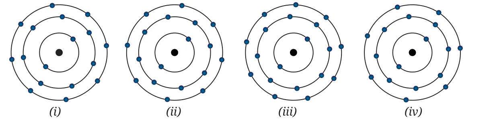
8.Formula unit mass of (i) NH4NO3 (ii) H3PO4 (iii) NaHCO3
(ii) 3 + 31 + 64 = 98 u (P = 31 u)
(iii) 23 + 1 + 12 + 48 = 84 u
9.Formulae of compounds formed by: (i) Mg and N (ii) Li and N (iii) Na and S (iv) Al and O
10.Complete Table 9.3.
| NO3– | SO42– | PO43– | |
|---|---|---|---|
| NH4+ | NH4NO3 | (NH4)2SO4 | (NH4)3PO4 |
| Li+ | LiNO3 | Li2SO4 | Li3PO4 |
| Al3+ | Al(NO3)3 | Al2(SO4)3 | AlPO4 |
| Cu2+ | Cu(NO3)2 | CuSO4 | Cu3(PO4)2 |
11.5.3 g sodium carbonate + 6.0 g acetic acid → 2.2 g CO2 + 0.9 g water + 8.2 g sodium acetate. Verify the law.
12.A species has 11 protons, 12 neutrons and 10 electrons. (i)–(iv)
(ii) A cation: 11 positive and only 10 negative charges, so net charge +1.
(iii) 2, 8
(iv) Sodium ion, Na+
13.A: 2, 8, 5 and B: 2, 8, 7. (i)–(iii)
(i) B is more reactive: it needs only one electron to complete its octet, while A needs three.
(ii) Both are non-metals that need electrons, so neither gives electrons away. They share electrons and form covalent bonds: A shares one electron with each of three B atoms, and each B shares one electron with A.
(iii) AB3 (like PCl3).
14.A: Copper sulfate conducts in the molten state but not in the solid state. R: Ions are fixed in the molten state but free in the solid state.
15.27Al, 80Br– and 201Hg2+ have 13, 35 and 80 protons. How many electrons and neutrons?
| Species | Electrons | Neutrons |
|---|---|---|
| 27Al | 13 (neutral) | 27 – 13 = 14 |
| 80Br– | 35 + 1 = 36 | 80 – 35 = 45 |
| 201Hg2+ | 80 – 2 = 78 | 201 – 80 = 121 |